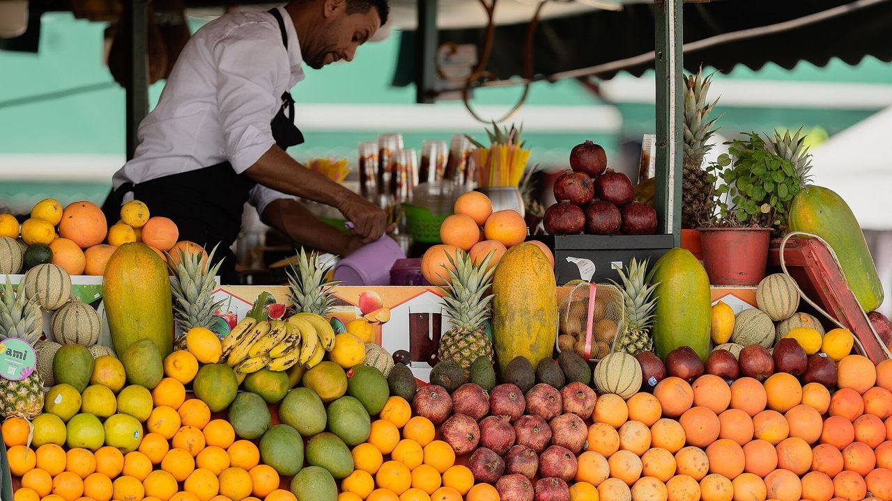

Race, Marrakech Medina

Behind
Best +0:01
371W
Target 418 W-47 W
- Cadence
- 87rpm
- Heart
- 140bpm
- Speed
- 26.5km/h
Recover6 of 21
0:07
Next: · 0:20 at level 22
+0.0%
9 m climbed
4.32 km
14
Resistance / 32
Solo races your best-time ghost: position reads Ahead or Behind, and solo alone gets a Pause button. Frozen at 10:03.